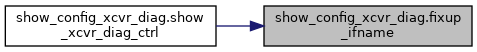
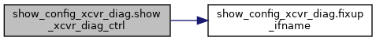

My Project
함수
show_config_xcvr_diag 네임스페이스 참조
함수
def
fixup_ifname
(
name
)
def
show_xcvr_diag_ctrl
(render_tables)
함수 문서화
◆
fixup_ifname()
def show_config_xcvr_diag.fixup_ifname
(
name
)
show_config_xcvr_diag.py
파일의
22
번째 라인에서 정의되었습니다.
22
def
fixup_ifname
(name):
23
ret = name
24
if
name.startswith(
"Ethernet"
):
25
ret =
"Ethernet {0}"
.format(name[8:])
26
elif
name.startswith(
"Eth"
):
27
ret =
"Eth {0}"
.format(name[3:])
28
return
ret
29
이 함수를 호출하는 함수들에 대한 그래프입니다.:

◆
show_xcvr_diag_ctrl()
def show_config_xcvr_diag.show_xcvr_diag_ctrl
(
render_tables
)
show_config_xcvr_diag.py
파일의
30
번째 라인에서 정의되었습니다.
30
def
show_xcvr_diag_ctrl
(render_tables):
31
data = []
32
cmds = []
33
34
# skip if render_tables is None
35
if
render_tables
is
None
:
36
return
'CB_SUCCESS'
,
''
37
38
key =
'sonic-transceiver:sonic-transceiver/TRANSCEIVER_DIAG/TRANSCEIVER_DIAG_LIST'
39
if
key
in
render_tables:
40
data = render_tables[key]
41
if
len(data) < 1:
42
return
'CB_SUCCESS'
,
''
43
44
# sort dictionary by value (i.e. config command)
45
for
row
in
natsorted(data, key=
lambda
x: x[
'ifname'
]):
46
ifn =
fixup_ifname
(row[
'ifname'
])
47
48
# interface transceiver diagnostics loopback
49
pre =
'interface transceiver diagnostics loopback'
50
if
row.get(
'lb_host_input_enabled'
) ==
'true'
:
51
cmds.append(
"{0} host-side-input {1}"
.format(pre, ifn))
52
if
row.get(
'lb_host_output_enabled'
) ==
'true'
:
53
cmds.append(
"{0} host-side-output {1}"
.format(pre, ifn))
54
if
row.get(
'lb_media_input_enabled'
) ==
'true'
:
55
cmds.append(
"{0} media-side-input {1}"
.format(pre, ifn))
56
if
row.get(
'lb_media_output_enabled'
) ==
'true'
:
57
cmds.append(
"{0} media-side-output {1}"
.format(pre, ifn))
58
59
# interface transceiver diagnostics pattern
60
pre =
'interface transceiver diagnostics pattern'
61
if
row.get(
'prbs_chk_host_enabled'
) ==
'true'
:
62
cmds.append(
"{0} checker-host {1}"
.format(pre, ifn))
63
if
row.get(
'prbs_chk_media_enabled'
) ==
'true'
:
64
cmds.append(
"{0} checker-media {1}"
.format(pre, ifn))
65
if
row.get(
'prbs_gen_host_enabled'
) ==
'true'
:
66
cmds.append(
"{0} generator-host {1}"
.format(pre, ifn))
67
if
row.get(
'prbs_gen_media_enabled'
) ==
'true'
:
68
cmds.append(
"{0} generator-media {1}"
.format(pre, ifn))
69
70
return
'CB_SUCCESS'
,
"\n"
.join(cmds)
이 함수 내부에서 호출하는 함수들에 대한 그래프입니다.:

show_config_xcvr_diag.show_xcvr_diag_ctrl
def show_xcvr_diag_ctrl(render_tables)
Definition:
show_config_xcvr_diag.py:30
show_config_xcvr_diag.fixup_ifname
def fixup_ifname(name)
Definition:
show_config_xcvr_diag.py:22
다음에 의해 생성됨 :
1.8.17
 1.8.17
1.8.17